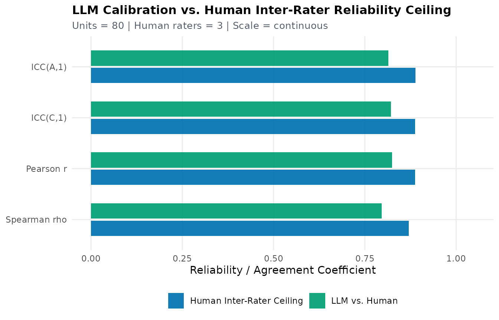
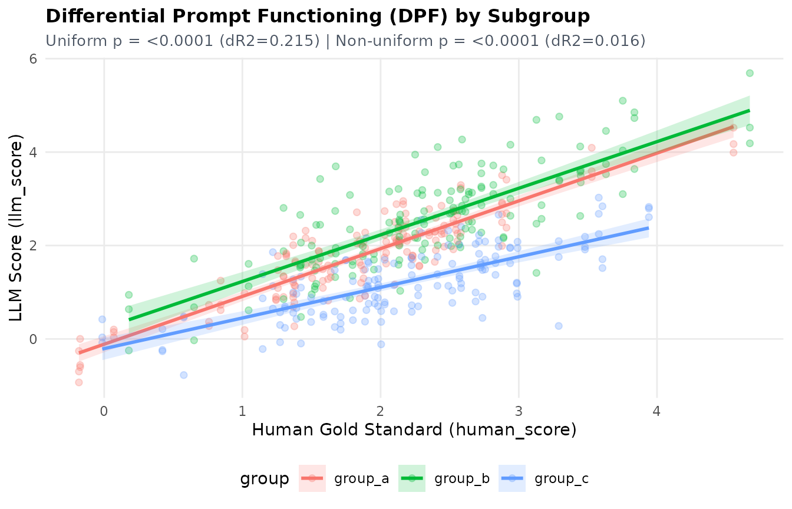
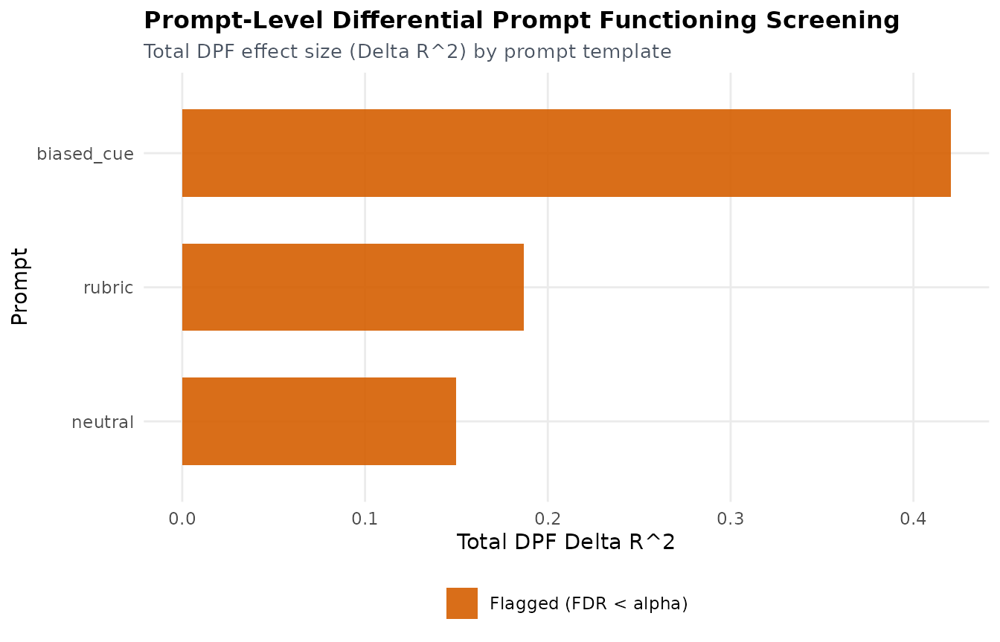
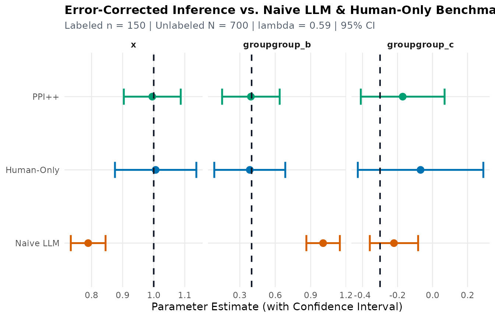

Differential Prompt Functioning (DPF), Fairness, and Human Ceiling Benchmarks
Source:vignettes/dpf-and-fairness.Rmd
dpf-and-fairness.RmdWhy High Overall Correlation Can Still Hide Subgroup Bias
An LLM rater can achieve an impressive overall correlation
()
with human gold-standard scores and still systematically over- or
under-score specific demographic, linguistic, or clinical subgroups. In
psychometrics, this failure of measurement invariance is known as
Differential Item Functioning (DIF); when induced by
prompt wording or model behavior, llmmetric terms it
Differential Prompt Functioning (DPF).
This vignette walks through a complete measurement-invariance and fairness workflow:
- Benchmarking LLM agreement against the human inter-rater
reliability ceiling via
human_irr(). - Detecting uniform (parallel shift) and
non-uniform (slope difference) DPF across multiple
subgroups via
dpf_test(). - Pinpointing the exact biased prompt template via
prompt-level FDR screening and the
prompt x groupinteraction test. - Mitigating residual subgroup bias in downstream regressions with
Prediction-Powered Inference (
ppi_lm()) and APA reporting viaformat_apa_table().
1. Establishing the Human Inter-Rater Reliability Ceiling
Before judging whether an LLM’s agreement with human raters is “good
enough,” we should measure how strongly human raters agree with
each other on the same construct. A human-vs-human ICC of
0.86 sets a natural ceiling on single-rater agreement.
set.seed(2026)
n_cal <- 80L
true_trait <- rnorm(n_cal, mean = 3.5, sd = 1.25)
# Three trained human coders + one LLM rater
cal_study <- tibble::tibble(
human_1 = true_trait + rnorm(n_cal, sd = 0.42),
human_2 = true_trait + rnorm(n_cal, sd = 0.45),
human_3 = true_trait + rnorm(n_cal, sd = 0.40),
llm_score = 0.20 + 0.90 * true_trait + rnorm(n_cal, sd = 0.50)
)
cal_llm <- calibration_metrics(cal_study, pred_col = "llm_score", truth_col = "human_1")
irr_ceiling <- human_irr(
cal_study,
rater_cols = c("human_1", "human_2", "human_3"),
llm_calibration = cal_llm
)
irr_ceiling
#>
#> ── Human Inter-Rater Reliability Ceiling (continuous)
#> Units: 80 | Human raters: 3 | Balanced: TRUE | Method: two_way_anova
#> ICC(A,1) = 0.889 | ICC(A,k) = 0.960 | ICC(C,1) = 0.888 | Mean r = 0.888 |
#> Pairwise RMSE = 0.589
#> LLM Calibration vs. Human Inter-Rater Ceiling:
#> # A tibble: 4 × 5
#> metric human_ceiling llm_vs_human gap pct_of_ceiling
#> <chr> <dbl> <dbl> <dbl> <dbl>
#> 1 ICC(A,1) 0.889 0.814 -0.0747 91.6
#> 2 ICC(C,1) 0.888 0.822 -0.0657 92.6
#> 3 Pearson r 0.888 0.824 -0.0636 92.8
#> 4 Spearman rho 0.870 0.796 -0.0747 91.4
autoplot(irr_ceiling)
irr_ceiling$benchmark directly compares LLM-human
agreement against the human-human ceiling, reporting both the raw gap
and the percentage of the human ceiling attained.
2. Detecting Multi-Group Uniform and Non-Uniform DPF
Now consider a multi-prompt study spanning three
demographic/clinical groups (group_a,
group_b, group_c) and three prompt
templates (neutral, rubric,
biased_cue), where:
-
neutralandrubricare largely invariant across subgroups, whereas -
biased_cueintroduces a strong uniform upward shift (+0.90) forgroup_band a modest downward shift (-0.45) forgroup_c, - and an overall non-uniform slope compression affects
group_c.
set.seed(2027)
n_u <- 150L
units <- tibble::tibble(
unit_id = paste0("u_", sprintf("%03d", seq_len(n_u))),
group = factor(rep(c("group_a", "group_b", "group_c"), each = n_u / 3L)),
x = rnorm(n_u),
true_score = 2.0 + 0.9 * rnorm(n_u) + 0.4 * (group == "group_b")
)
units$human_score <- units$true_score
units$text <- paste("Clinical reflection", seq_len(n_u))
pg_bias <- matrix(
c(
0.00, 0.00, 0.00, # neutral
0.00, 0.05, -0.05, # rubric
0.00, 0.90, -0.45 # biased_cue
),
nrow = 3L,
ncol = 3L,
byrow = TRUE,
dimnames = list(c("neutral", "rubric", "biased_cue"), c("group_a", "group_b", "group_c"))
)
des <- coding_design(
prompts = c(
neutral = "Score construct intensity objectively: {text}",
rubric = "Apply anchored rubric criteria: {text}",
biased_cue = "Evaluate emotional tone with social cues: {text}"
),
models = "model_a",
schema = coding_schema(llm_score = schema_field("numeric"))
)
be <- backend_mock(
seed = 314,
error_sd = 0.35,
prompt_sd = 0.10,
unit_prompt_sd = 0.15,
dpf_nonuniform = c(group_c = -0.35),
dpf_prompt_group = pg_bias
)
coded <- code_texts(units, text_col = "text", id_col = "unit_id", design = des, backend = be)
dpf_res <- dpf_test(
coded,
score_col = "llm_score",
truth_col = "human_score",
group_col = "group",
prompt_col = "prompt",
id_col = "unit_id"
)
dpf_res
#>
#> ── Differential Prompt Functioning (DPF) Diagnostics
#> Family: gaussian | Reference group: "group_a" | Clustered: TRUE | DPF detected:
#> TRUE
#> # A tibble: 3 × 7
#> test statistic df p_value delta_r2 magnitude flagged
#> <chr> <dbl> <dbl> <chr> <dbl> <chr> <lgl>
#> 1 uniform 272. 2 <0.0001 0.215 large TRUE
#> 2 nonuniform 29.0 2 <0.0001 0.016 negligible TRUE
#> 3 omnibus 341. 4 <0.0001 0.231 large TRUE
#> Per-prompt DPF screening (3 prompts):
#> # A tibble: 3 × 6
#> prompt n omnibus_p omnibus_p_adj delta_r2_total flagged
#> <chr> <int> <dbl> <dbl> <dbl> <lgl>
#> 1 biased_cue 150 2.43e-40 7.30e-40 0.420 TRUE
#> 2 neutral 150 7.40e-16 7.40e-16 0.150 TRUE
#> 3 rubric 150 2.91e-19 4.36e-19 0.187 TRUENotice two crucial methodological safeguards in
dpf_test():
- Because every unit was scored by 3 prompts
(
id_col = "unit_id"),dpf_test()automatically activates unit-clustered sandwich Wald tests (clustered = TRUE), preventing pseudoreplication from inflating Type-I error. - Per-prompt screening applies Benjamini-Hochberg FDR
adjustment (
omnibus_p_adj) and runs a globalprompt x groupinteraction test confirming that subgroup bias differs systematically across prompt wordings.
autoplot(dpf_res, type = "curves")
autoplot(dpf_res, type = "prompts")
Inspecting dpf_res$prompt_interaction_test and
dpf_res$subgroup_summary immediately tells the research
team which prompt should be dropped or revised and
which subgroups suffer conditional bias:
dpf_res$prompt_interaction_test
#> # A tibble: 1 × 7
#> test stat_type statistic df p_value delta_r2 flagged
#> <chr> <chr> <dbl> <int> <dbl> <dbl> <lgl>
#> 1 prompt_x_group Wald_Chisq 124. 4 9.06e-26 0.0487 TRUE
dpf_res$subgroup_summary[, c("group", "n", "raw_bias", "cond_bias", "cond_slope", "rmse")]
#> # A tibble: 3 × 6
#> group n raw_bias cond_bias cond_slope rmse
#> <chr> <int> <dbl> <dbl> <dbl> <dbl>
#> 1 group_a 150 -0.0701 0 1.02 0.436
#> 2 group_b 150 0.227 0.292 0.997 0.694
#> 3 group_c 150 -0.948 -0.875 0.655 1.113. Mitigating Residual Bias in Downstream Regression via PPI++
Even after dropping biased_cue, subtle residual
calibration or subgroup bias may persist in rubric and
neutral. Suppose we score a larger corpus
(
unlabeled texts alongside
human-validated texts) and estimate group differences controlling for
covariate x:
set.seed(2028)
n_tot <- 850L
grp_all <- factor(sample(c("group_a", "group_b", "group_c"), n_tot, replace = TRUE))
x_all <- rnorm(n_tot)
y_all <- 2.0 + 1.0 * x_all + ifelse(grp_all == "group_b", 0.4, ifelse(grp_all == "group_c", -0.3, 0)) +
rnorm(n_tot, sd = 0.85)
# LLM retains uniform DPF bias (+0.65 on group_b) and slope compression
llm_all <- 0.3 + 0.85 * y_all + ifelse(grp_all == "group_b", 0.65, 0) + rnorm(n_tot, sd = 0.45)
study_df <- tibble::tibble(
x = x_all,
group = grp_all,
human_score = c(y_all[1:150], rep(NA_real_, n_tot - 150L)),
llm_score = llm_all
)
fit_ppi <- ppi_lm(human_score ~ x + group, data = study_df, pred_col = "llm_score")
format_apa_table(fit_ppi, include_intercept = FALSE)
#> **Comparison of Naive LLM, Human-Only, and PPI++ Parameter Estimates**
#>
#> | Term | Estimator | Estimate | SE | 95% CI | p | Eff. Gain |
#> | --- | --- | --- | --- | --- | --- | --- |
#> | x | Naive LLM | 0.789 | 0.029 | [0.733, 0.845] | < .001 | -- |
#> | x | Human-Only | 1.006 | 0.067 | [0.875, 1.137] | < .001 | 1.00x |
#> | x | PPI++ | 0.995 | 0.047 | [0.904, 1.087] | < .001 | 2.05x |
#> | groupgroup_b | Naive LLM | 1.006 | 0.072 | [0.864, 1.148] | < .001 | -- |
#> | groupgroup_b | Human-Only | 0.385 | 0.153 | [0.084, 0.685] | .012 | 1.00x |
#> | groupgroup_b | PPI++ | 0.394 | 0.124 | [0.150, 0.638] | .002 | 1.52x |
#> | groupgroup_c | Naive LLM | -0.221 | 0.070 | [-0.358, -0.083] | .002 | -- |
#> | groupgroup_c | Human-Only | -0.069 | 0.183 | [-0.427, 0.290] | .707 | 1.00x |
#> | groupgroup_c | PPI++ | -0.171 | 0.122 | [-0.410, 0.068] | .162 | 2.25x |
#>
#> *Note.* Labeled validation n = 150; unlabeled LLM N = 700; power-tuning lambda = 0.595. Eff. Gain denotes variance reduction (effective sample-size multiplier) relative to Human-Only.
While Naive LLM severely overestimates the
group_b difference due to DPF (~0.98 vs. true
0.40), PPI++ completely removes the
subgroup bias while tightening confidence intervals compared to using
the 150 human annotations alone.